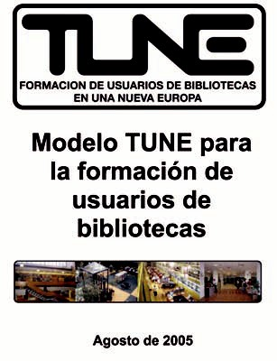

Las bibliotecas son organismos vivos compuestos por personas, colecciones e infraestructuras que crean servicios. Están afectadas por los mismos factores que hemos mencionado en el caso de los bibliotecarios y como tal tienen que hacer frente a las amenazas y aprovecharse de las oportunidades.
Esos factores están íntimamente relacionados con el desarrollo de las TIC y con sus consecuencias: aparición de nuevos servicios, recursos y profesionales que intervienen en el mismo ámbito de trabajo, cambio en los sistemas educativos y en la forma de comunicarse de los ciudadanos, diferentes formas de lectura y escritura (lo digital está configurando un nuevo concepto de alfabetización lecto-escritora) que conllevan nuevas formas de trabajar y de interpretar la realidad (de brecha cognitiva hablaba Carles Monereo).
Por eso, es totalmente necesario que cambien para no perder su papel en la llamada sociedad de la información, o mejor, la sociedad-red. Recientemente un titular de un periódico referido a los medios de comunicación nos llamaba la atención: “La resistencia al cambio es la mejor receta para desaparecer”.
Estamos en una época de transición que produce una cierta confusión que se traduce en debates y polémicas en las que se enfrentan lo ya conocido con lo nuevo, donde unos defienden el mantenimiento del statu quo y otros abogan por la instauración automática de todo lo nuevo.
La práctica se demuestra haciendo y pueden verse ejemplos de cómo ese cambio se va produciendo en estructuras aparentemente tradicionales como las que a continuación mencionamos.
La Biblioteca Pública de Roterdamm <http://www.bibliotheek.rotterdam.nl> tiene una estructura de cilindro piramidal que se desarrolla desde una base ruidosa, totalmente modular y preparada para cualquier tipo de actividad hasta su zona superior silenciosa dedicada al estudio; con espacios intermedios para la música (¿por qué hay un piano en “todas” las bibliotecas holandesas?), el juego, el trabajo en grupo, la conexión a la red... donde los lugares de información y apoyo bibliotecario son fácilmente identificables. Y donde el acceso a lugares sólo de esparcimiento (bar, teatro) son directos.
La Biblioteca Pública de Amsterdam <http://www.oba.nl> (OBA) es un enorme edificio donde se pueden contar decenas de espacios diferentes, la mayor parte de ellos modificables, donde la conexión a la red puede establecerse desde cualquier punto, con espacio para exposiciones, cafetería integrada en el espacio dedicado a las publicaciones periódicas, salas de trabajo en grupo e individuales con diseño atractivo, lugares para el descanso y la reflexión, puntos de información visibles desde cualquier lugar, bibliotecarios en movimiento, zona de idiomas, señalización atractiva y variada (cortinas, lámparas, cuadros, sillones, butacas, estanterías que no impiden la visión), espacios de audición y cafetería/restaurante en el último piso, para renovar energías y volver a descender los pisos que sean necesarios para continuar con la actividad. También con muchos medios que ayudan a desembarazar a los bibliotecarios de las tareas más tediosas: préstamo y devolución de libros automáticos (incluido para los más pequeños, que cuentan con máquinas adecuadas a su menor tamaño), con sistemas “inteligentes” que transportan los libros hasta las plantas donde deben ser de nuevo colocados.
La DOK <http://www.dok.info/index.php> de Delft es más pequeña; pero es un ejemplo de cómo se puede condensar en un todo armónico mucho de lo que estamos diciendo: desde el espacio de la cafetería donde se puede leer el periódico o las revistas entre música ambiental, se ve el escenario para actuaciones donde figura el piano, la zona donde se pueden escuchar grabaciones sonoras sin ser perturbado ni perturbar, las luces de neón que indican los espacios donde se encuentran la PSP, la Wii, la Nintendo..., los conductos del aire acondicionado que señalan casi con un estilo graffitero las diferentes secciones de la colección, el mostrador de referencia e información donde apenas nada separa a usuario y bibliotecario. Moviéndonos un poco podemos acceder al espacio para los más pequeños donde pueden gatear para encontrarse con sus libros cercanos al suelo, estanterías con grandes ruedas para poder ser redistribuidas, un anfiteatro similar al de la FNAC para sentarse a leer a sus autores favoritos, las consolas de todo tipo a las que hemos aludido, una sala en el que se pueden tomar prestadas pinturas y esculturas para adornar la casa, diferentes espacios que se reservan para poder trabajar en grupo con todo tipo de tecnologías, medios para digitalizar y transformar formatos de todo tipo, personal accesible y visible. Y, una vez más, autopréstamos que permiten a un niño de 10 años llevarse 8 libros en un instante, y sistema de devolución de libros –accesible sin que la biblioteca esté abierta– que mediante la radiofrecuencia y la instalación oportuna reparte los libros según su destino y lo envía a él.
Y por poner un ejemplo de biblioteca universitaria, la de Tilburg que ha eliminando del centro todas las estanterías para llenarlo de más espacios de trabajo individual y en grupo, algunos de ellos con gran cantidad de medios informáticos (Learning forum), donde funciona la wifi incluyendo el espacio verde exterior, desde donde se pueden descargar los documentos en los ordenadores personales o enviarlos a varias impresoras centralizadas, dejar cargando el ordenador en taquillas individuales mientras se realizan otras actividades, donde se puede regular de manera ergonómica la altura de las mesas o de las pantallas, con espacios diseñados de diferente manera para poder trabajar con TIC o con papel, con tus medios electrónicos o los propios del centro (muy variados). Preparándose para conseguir más alumnos internacionales, que nunca necesitarán pisar sus instalaciones.
Parece que no estamos hablando de ALFIN; pero no es así. Es evidente que una disciplina que tiene como uno de sus objetivos la formación crítica de las personas en el uso de la información y las TIC no puede obviar el contexto en el que trabaja, incluyendo el económico, social, organizativo, tecnológico... por lo que el escenario en el que debe realizar su labor es importante. Además se añade otra cuestión: la liberación de determinadas tareas permite dedicarse a otras: como recientemente planteaba Fernando Juárez <http://diarium.usal.es/biblioblog/2010/correcciones>, en Iwetel la crisis (económica y “de identidad”) puede servir para repensar el ecosistema bibliotecario (la salud de mi biblioteca depende de la de al lado), el concepto de fondo (dar el salto de “colección almacenada” a “información gestionada”), los conceptos de usuarios, servicios...y los “tempos” laborales “liberando esfuerzos de la gestión del fondo presencial e implementarlos en el fondo informacional”.
Una vez planteado este escenario, nos queda hacer mención a los tipos de biblioteca existentes; pero sin profundizar en ello. Como en cualquier cuestión de la vida, las clasificaciones son el resultado del punto de vista que adoptemos y podemos encontrar importantes diferencias; al margen de que algunas bibliotecas puedan pertenecer a más de una tipología[80]. Podríamos incluir la compleja clasificación de la IFLA o los diferentes espacios que se han creado en ALFARED):
Pero vamos a simplificarlos al hablar de la ALFIN porque creemos que las características de algunas son similares a las de otras. De tal manera sólo hablaremos de las bibliotecas:
Escolares: ligadas a los primeros estadios de la educación y de la formación como personas y ciudadanos
Universitarias: enraizadas en la educación superior, que crea conocimiento científico y que pueden recoger aspectos de las bibliotecas especializadas
Públicas: que cubre un amplio abanico de bibliotecas de diferente tipo, ligadas al papel de las personas como ciudadanos, al aprendizaje permanente a lo largo de la vida, la inclusión social, la multiculturalidad y el servicio público.
Haremos una breve mención a las bibliotecas híbridas.
El Consejo de Cooperación Bibliotecaria <http://www.mcu.es/bibliotecas/MC/ConsejoCB/Presentacion.html> está regulado por el Decreto 1573/2007, de 30 de noviembre <http://hdl.handle.net/10421/193>, como desarrollo de la Ley 10/2007, de 22 de junio, de la lectura, del libro y de las bibliotecas <http://hdl.handle.net/10421/188>.
Participan en él representantes de la Administración General del Estado, de las comunidades autónomas, de las entidades locales, de REBIUN y de las asociaciones profesionales.
Su principal objetivo es “canalizar la cooperación bibliotecaria entre las administraciones públicas”. Y como objetivos específicos, trata de la integración de los sistemas bibliotecarios públicos en el Sistema Español de Bibliotecas, la elaboración de planes para favorecer y promover el desarrollo y mejora de las condiciones de las bibliotecas y sus servicios, fomentar el intercambio y formación profesional de los bibliotecarios, informar de la normativa que afecte a las bibliotecas españolas, poner en marcha proyectos cooperativos beneficiosos para la sociedad y estudiar y desarrollar todas las actuaciones que encomienden las conferencias sectoriales de Cultura y de Educación y la CRUE.
Para conseguirlo se crean diferentes comisiones técnicas para cada tipo de biblioteca (nacionales y regionales, públicas, escolares, universitarias, especializadas) en las que se pueden crear grupos de trabajo (hay un total de 15 en la actualidad)[81]; dando la posibilidad de crear grupos mixtos. Un ejemplo de este tipo es el dedicado a la ALFIN.
El Grupo de Trabajo de Alfabetización Informacional[82] está coordinado por Felicidad Campal y cuenta con participantes escogidos por las Comunidades Autónomas, la Biblioteca Nacional, el Ministerio de Cultura, REBIUN, FESABID, la FGSR, la FEMP y las bibliotecas especializadas.
Se creó en 2007, cuenta con un foro interno de trabajo y ha dirigido su actividad fundamentalmente a fortalecer y proporcionar contenido a la plataforma ALFARED, a redactar un informe sobre ALFIN en bibliotecas públicas españolas (lo veremos en el apartado de bibliotecas públicas) y a estudiar el desarrollo de aplicaciones concretas de ALFIN para bibliotecas públicas. Por otra parte, los miembros del grupo han participado en diferentes jornadas profesionales.
ALFARED <http://www.alfared.org> es una plataforma web en la que se han creado –además de un blog– espacios específicos para cada tipo de bibliotecas. Algunos de los miembros del grupo de trabajo son los coordinadores de estos espacios, que se pretenden convertir en una especie de repositorios en los que tenga cabida toda la información relevante sobre la ALFIN con respecto a cada tipología bibliotecaria; algo que han manifestado especialmente las bibliotecas universitarias. En la plataforma participan otras personas que no forman parte del grupo de trabajo pero que estuvieron presentes en su desarrollo preliminar, que –como hemos indicado– es heredero del blog que iniciara José Antonio Gómez Hernández.
Se recogen los principales documentos internacionales y fuentes de información sobre ALFIN para cada tipo de biblioteca y el blog sirve tanto para incorporar materiales nuevos como para publicitar actividades, recursos, noticias... relevantes en el ámbito que tratamos.
En el apartado de aplicaciones prácticas para bibliotecas públicas se estudió la posibilidad de adaptar DAMI (Diploma Andaluz para el Manejo de Información <http://www.juntadeandalucia.es/cultura/opencms/export/download/bibhuelva/DAMI.pps>); pero tras un exhaustivo estudio se entendió que costaría más esa adaptación que crear algo nuevo. Se decidió entonces dedicarse a crear un programa que sirviera a los bibliotecarios para ayudar a los ciudadanos a buscar empleo, contemplando todos los aspectos que confluyen en dicha tarea. Está a punto de ser finalizado y es posible que próximamente se presenten sus resultados.
Por otra parte, se han elaborado fichas de buenas prácticas que serán enviadas a las distintas bibliotecas para que hagan llegar las iniciativas que llevan a cabo y puedan hacerse visibles en la plataforma ALFARED.
La biblioteca escolar ofrece servicios de aprendizaje, libros y otros recursos, a todos los miembros de la comunidad escolar para que desarrollen el pensamiento critico y utilicen de manera eficaz la información en cualquier soporte y formato... La biblioteca escolar es un componente esencial de cualquier estrategia a largo plazo para la alfabetización, educación, provisión de información y desarrollo económico, social y cultural. La biblioteca escolar es responsabilidad de las autoridades locales, regionales y nacionales y, por tanto, debe tener el apoyo de una legislación y de una política específicas. | ||
| --(Manifiesto de la biblioteca escolar [83], IFLA/UNESCO) | ||
Las bibliotecas escolares están íntimamente relacionadas con la educación formal, obligatoria en todos aquellos países que pueden permitírselo, hasta la llegada a la educación superior.
Esta educación se da en las momentos más cruciales del desarrollo humano en que la persona está más abierta a influencias y a la asimilación de comportamientos, actitudes, habilidades, información, estímulos... que transformará en conocimiento indeleble, que perdurará durante toda la existencia. ¿Quién no se ha rebelado ante la idea de que algo que era un planeta en nuestra infancia ya no lo sea, o porque le cambien el número de continentes que conforman la misma Tierra? ¿Quién por otra parte no se ha introducido a lo largo de su trayectoria vital en aquellas disciplinas en que formaba aquella maestra genial o por el contrario rechazar de plano otras que –aunque respondían a sus intereses– fueron truncadas por un profesor incompetente?
Las personas que son formadas en la educación primaria y secundaria son los futuros formadores, los investigadores del mañana, los trabajadores, los planificadores, los artistas, los políticos, los que compondrán las asociaciones de profesionales, los que participarán en la elaboración de las leyes... los profesionales de la información.
![[Sugerencia]](../../../../system/docbook-xsl/images/tip.png) | Decálogo para sobrevivir en la era de la información |
|---|---|
Estas diez competencias se encierran en dos
|
Monereo, Carles y Pozo, Juan Ignacio: ¿En qué siglo vive la escuela?: el reto de la nueva cultura educativa. Cuadernos de Pedagogía, n. 298, enero de 2001, p. 50-55.
La idea que extraigan de lo que es la información y del papel que en ella juegan las bibliotecas será fundamental. Si éstas son vistas simplemente como algo adicional y superfluo así será su visión de las bibliotecas futuras; si las contemplan como el espacio donde acudir con sus apuntes para estudiar dos días antes de la recuperación de las asignaturas suspendidas eso será lo que pedirán a las bibliotecas de su mañana; si por el contrario las experimentan como un espacio de desarrollo personal, íntimamente ligado a los sistemas de aprendizaje, con flexibilidad para adaptarse a los cambios, con posibilidades de intercambio con compañeros, profesores y profesionales bibliotecarios, eso será lo que exijan en su futuro de adultos o cuando atraviesen la etapa en la que estarán conformándose definitivamente como investigadores, educadores, artistas o ciudadanos.
Por eso pensamos que las bibliotecas escolares son la clave ya no para el desarrollo bibliotecario de cualquier país sino elemento fundamental para el desarrollo social.
Y precisamente en España las bibliotecas escolares no existen. Que me perdonen los que con gran esfuerzo han conseguido mantener adelante ejemplos honrosos. Lo que quiero decir es que no existen como sistema, como estructura planificada y eficiente, integrada en los planes de estudio.
¿Será por eso por lo que nuestro país presenta un retraso (aunque sin obviar logros importantes en los últimos tiempos) en los sistemas bibliotecarios[84] ante países de similar nivel económico como pueden ser los escandinavos o los más desarrollados del mundo anglosajón en los que las bibliotecas llegan a ser clave hasta en las películas de Hollywood[85].
Para que se produzca un cambio tiene que haber previamente uno en la cultura docente. Fundamentalmente “se precisa que el profesorado logre una inclusión de la biblioteca en sus estrategias de enseñanza, que la biblioteca entienda y sepa atender sus necesidades, y le ofrezca propuestas que le ayuden a satisfacerlas” (Gloria Durbán, 2008). Además “la implementación de la biblioteca escolar pasa por iniciar un proceso de trabajo en la escuela que persiga no únicamente su desarrollo estable, sino también su consolidación como recurso educativo útil”.
La importancia de las bibliotecas escolares y su situación se muestra en los debates que de forma cíclica se producen en listas de distribución profesionales como Iwetel. Recientemente José Antonio Gómez (2009), con su demostrada capacidad de síntesis, nos regaló un estado de la cuestión acerca de la situación de las bibliotecas escolares.
Algunos de los problemas que existen respecto a ella son:
Su inexistencia en muchos casos, a pesar de que la LOE[86] (2006) determina que “los centros de enseñanza dispondrán de una biblioteca escolar”
La escasa dotación, que se fundamenta en el libro tradicional. En ocasiones, cuando se plantea el uso de las TIC en la escuela en vez de impulsar la implantación de las bibliotecas escolares lo que hacen es sustituirla. No obstante, comienzan a incluirse en las ayudas para bibliotecas escolares <http://www.boe.es/boe/dias/2009/05/25/pdfs/BOE-A-2009-8643.pdf>.
Su utilización casi exclusivamente para tareas de lectura[87], sin implicación de la mayor parte de las asignaturas o áreas del conocimiento.
Su no utilización por los profesores como elemento en la formación, ni siquiera como medio para potenciar los recursos de información.
La no existencia de profesionales debidamente preparados, que las deja a la buena voluntad de determinados profesores, que además pueden convalidar alguna hora de clase. Esto tiene otra implicación: el tiempo y el momento de apertura son restringidos, dado que los alumnos (y los profesores) tienen calendarios muy compactos y estructurados en los que apenas hay resquicios para acercarse a la biblioteca. Esto se solucionaría planteando actividades de clase que tengan en cuenta la biblioteca y considerando su uso como algo transversal, y por tanto, adecuado para cada una de las disciplinas. Es la clave en realidad para casi todos los problemas de las bibliotecas escolares: dotarlas de sentido dentro de la enseñanza. Si esto no se hace, aunque haya medios y profesionales preparados podemos encontrarnos con espacios abiertos y vacíos.
La no aparición de las competencias de información y digitales en el currículo, aunque sí se han incluido en la educación: “Tratamiento de la información y competencia digital” (como hemos mencionado en el apartado dedicado a los bibliotecarios en este capítulo).
Todo ello evidencia que las autoridades académicas no han dado el valor que tiene a la biblioteca escolar.
Félix Benito (2001) es referencia obligada en todo lo que tiene que ver con la biblioteca escolar en relación con la ALFIN. Seguidor de Bernal, desarrolló el concepto de educación documental, como en su obra La educación documental en la biblioteca escolar <http://www.cnice.mecd.es/recursos2/bibliotecas/html/encuen/art3.htm> que es importante por varias razones:
Nos define lo que es educación documental, entendida como enseñanza transversal esencial para el aprendizaje a lo largo de la vida.
Desglosa los contenidos que se corresponden con las variables en torno a las que se articula la educación documental: pensamiento, información y valores. Esos contenidos deberán ser implementados en el currículum escolar.
Nos describe qué actividades se pueden realizar en la biblioteca escolar para conseguir enseñar a pensar, enseñar a informarse y aprender a vivir. Las actividades son numerosas y constituyen perfectamente el contenido de un programa de alfabetización informacional. Además diferencia entre educación infantil, educación primaria y educación secundaria.
Aurora Cuevas (2007) publicó Lectura, alfabetización en información y biblioteca escolar, en buena medida fruto de su tesis doctoral. En ella nos acerca a la documentación que existe para la educación[88] y a su implicación con las tecnologías, hace un repaso sobre la historia de la ALFIN[89], nos aproxima al concepto de CRA (o CREA) y aporta un modelo de ALFIN basado en la promoción de la lectura que después describiremos más detenidamente.
El concepto de CREA (Centro de Recursos para la Enseñanza y el Aprendizaje)[90] o CRA (Centro de Recursos para el Aprendizaje)[91] pretende estar incluido en el proyecto educativo y en el programa del centro. Aurora Cuevas (2007; p. 178) lo define así “El CRA enriquece la noción tradicional de BE al definirse como un nuevo espacio educativo dinámico, no mero gestor de recursos educativos, sino ámbito para una metodología didáctica activa, interdisciplinar y adaptada a la diversidad de entornos y aprendizajes; centro suministrador, organizador de saberes y potenciador del autoaprendizaje, no complemento del currículum académico, sino parte integrante de él. Un espacio-entorno para la formación, la información, el entretenimiento, el intercambio y el conocimiento” y contempla –en buena medida como hacen los CRAI universitarios– espacios diferentes a los tradicionales con zona de ordenadores conectados a Internet, laboratorios de idioma y multimedia, áreas de facilidades tecnológicas, de trabajo en grupo, área cultural y recreativa, con recursos virtuales educativos normalizados (repositorios), depósitos de materiales docentes, recursos digitales... y recursos humanos profesionales.
Gloria Durban (2009) cree que lo “relevante es la función educativa de la biblioteca como entorno de aprendizaje... y elemento de apoyo para la mejora del desarrollo del currículo”, por eso ha creado un espacio Web con el título La biblioteca escolar como herramienta educativa: una herramienta para el desarrollo de prácticas lectoras y habilidades intelectuales <http://www.bibliotecaescolar.info/castellano.htm> con diferentes apartados que proporcionan las claves para entender la situación y los problemas de la biblioteca escolar, suministran acceso a recursos de muy variada índole que están siendo utilizados en las bibliotecas escolares, materiales didácticos (mapas conceptuales, itinerarios formativos, tutoriales)... e incluso un modelo de aplicación de la competencia informacional <http://www.bibliotecaescolar.info/documents/competenciacastellano.pdf>). Incluye artículos suyos que sintetizan la situación actual de la biblioteca escolar con sus tensiones y sus problemas de implementación.
Acaba de publicar una obra de síntesis (Durban, 2010) en la que defiende la biblioteca escolar como vinculada a la práctica de la lectura y la competencia informacional[92] (p. 13) e integrada en el proyecto curricular y educativo del centro (p. 18), convirtiéndose en un recurso educativo más que un servicio bibliotecario (p. 20) que forma parte de la institución escolar. La biblioteca es considerada como una estructura organizativa estable, un entorno presencial de aprendizaje y lectura, un recurso educativo y un agente pedagógico interdisciplinario (p. 40).
La lectura (ligada al lenguaje) es un elemento básico en la creación del conocimiento y en la comunicación; pero no debe considerarse únicamente desde el punto de vista de la cultura impresa sino que es multimodal.
Por su parte, la competencia informacional está irremediablemente unida al concepto de multialfabetización (p. 89).
Su función estable de apoyo a la labor docente se reconoce mediante el elemento humano, que es fundamental: el coordinador de biblioteca, que debe ser un docente (p. 102), ya que debe trabajar físicamente fuera de ella y formar parte de la organización y planificación educativa, integrado en los procesos o proyectos de mejora. También colaborará directamente con el coordinador de las herramientas y recursos TIC.
La biblioteca se transforma en un laboratorio donde se experimenta (p. 31). Su labor vinculada a las actividades formativas del programa docente (proyecto curricular del centro) no es óbice para que pueda proporcionar “actividades, acciones y servicios para todo el centro” (p. 33) o para que funcione fuera del horario escolar, incluyendo a los familiares de los alumnos.
Una de las tensiones que manifiesta en varios de sus escritos es la influencia de Internet y su posible competencia con las bibliotecas escolares; cuando son recursos complementarios. No es algo que afecte únicamente a las bibliotecas escolares sino a toda la educación en sí, aunque no es este el lugar para profundizar en este aspecto. Es evidente que si la biblioteca se queda al margen de los nuevos modelos de creación y comunicación de la información no tendrá visibilidad alguna.
Hay múltiples recursos que ayudan a relajar dicha tensión:
La página web de Pere Marqués <http://peremarques.pangea.org>, a quien hemos citado en diferentes momentos, que reflexiona sobre todo acerca de las tecnologías y la educación, las competencias, los recursos educativos...
El Instituto de Tecnologías Educativas <http://www.ite.educacion.es> , que también proporciona multitud de recursos, como ejemplo, el espacio “Buenas prácticas 2.0” <http://recursostic.educacion.es/buenaspracticas20/web>.
Siguiendo con el mundo Web 2.0 (al que también se refiere Pere Marqués) encontramos algunas sugerencias sobre cómo se puede aprovechar en el aula. Dos botones de muestra:
Bibliotecas 2.0 for profes ayuda a comprender lo que significa y lo que aporta, mostrando experiencias concretas. <http://issuu.com/anto8/docs/bibliotecasdoscero>
100 maneras de usar los medios de comunicación social en el aula que aunque parece ir dirigido a universitarios puede utilizarse perfectamente en Secundaria. <http://www.onlineuniversities.com/blog/2010/05/100-inspiring-ways-to-use-social-media-in-the-classroom>.
Sobre este aspecto, acaba de publicarse una Orden del Ministerio de Educación (Orden EDU/1465/2010, de 4 de junio <http://www.boe.es/boe/dias/2010/06/07/pdfs/BOE-A-2010-9026.pdf>) que crea un distintivo de calidad Sello Escuela 2.0. para reconocer el compromiso con el desarrollo y mejora de la calidad educativa mediante el uso de las TIC.
A lo largo de estas páginas ya hemos visto modelos y normas relacionados con las bibliotecas escolares.
Hay que volver a subrayar las normas que publicó la AASL para los estudiantes del siglo XXI, en el que se recogen todos los tipos de competencias necesarios, que agrupan las que a veces echan de menos los críticos con una ALFIN alejada de las TIC y las redes sociales.
También son importantes algunos de los modelos citados, en especial el de Eduteka, que como ya indicamos ha desarrollado una buena cantidad de ejemplos prácticos asociados a cada una de las partes del modelo, que incluye aspectos evaluativos en cada uno de los pasos y que además se inserta en un espacio web en el que acompaña a multitud de recursos interesantes para el aula. Puede impulsar a crear un modelo propio la iniciativa de Info-Paint llevada a cabo por alumnos.
Algunos ejemplos de modelos desarrollados en nuestro país son los siguientes: Félix Benito diseñó en 1996 lo que él llamó el modelo HEBORI (Habilidades y Estrategias para Buscar, Organizar y Razonar la Información) que cuenta con 5 módulos:
Crítico-transformacional: conocer y reflexionar sobre los retos de la sociedad de la información y la necesidad de nuevas competencias
Cognitivo-lingüístico: conocer los pasos necesarios para realizar un buen aprendizaje y mejorar las habilidades de comprensión lectora
Documental-tecnológico:
Parte teórica: estudio y valoración del desa-rrollo histórico, los entornos y profesionales de la información
Parte práctica: realización de actividades sobre procedimientos documentales
Estratégico-investigador: elaboración de proyectos cooperativos de trabajo, adoptando diferentes roles profesionales
Creativo-transferencial: aplicación de los aprendizajes en otros contextos para mejorar los sistemas de organización de su entorno, así como los propios hábitos de planificación y organización
Por otra parte, también confeccionó un diseño curricular para una asignatura titulada Información Documental y Aprendizaje para el País Vasco, en 1997.
Rosa Piquín (2005) nos muestra lo que llama proyectos documentales integrados (PDI) en los que colaboran escuelas y bibliotecas.
Consisten en “pequeños trabajos de investigación en los que el alumnado trabaja directamente con la documentación (independientemente del soporte) aprendiendo a aprender y trabajar autónomamente”. “El alumnado, además de investigar sobre un tema o problema concreto, se familiariza con los mecanismos de búsqueda de información y trabajo intelectual empleando para ello los recursos documentales de la Biblioteca Escolar... en los que no sólo se emplea la metodología de Trabajo por Proyectos (Kilpatrick, Dewey) sino que se pone el acento en la Alfabetización en Información (ALFIN), favoreciendo el acceso del alumnado a fuentes documentales diversas, fomentando y facilitando la lectura en la multiplicidad de textos y formatos que caracterizan el acceso a la información actualmente y, lo que es más importante, enseñando a procesarla y comunicarla.”
En varios de sus documentos (véase Piquín y Reina, 2005; o “Proyectos Documentales Integrados: una experiencia tecnológica entre bibliotecas y escuelas” <http://sol-e.com/plec/archivos/Docs_Bibliografias/rpiquin.pdf>) nos explica el significado de cada una de las tres palabras que forman el concepto: Proyecto (entroncando con la metodología del trabajo por proyectos, cuya clave es un trabajo de investigación premeditado que integra aprendizajes), Documental (emparentando documento con hacer, saber y comunicar) e Integrando la biblioteca escolar en las labores educativas de los centros.
Nos habla de hasta 7 pasos necesarios para diseñar este tipo de proyectos, aunque lo más interesante es ver cómo se aplican esos pasos a la realidad con ejemplos concretos:
Qué queremos hacer, averiguar... y por qué
Detectamos los conocimientos previos
Qué queremos saber (extraer el interés del asunto)
Seleccionamos los documentos y leemos la información
Se procesa la información
Se comunica o presenta la información
Se evalúa y se establece el trabajo definitivo
O también cuando establece aspectos organizativos que ayudan a programar los proyectos y aporta sugerencias interesantes que puedan atraer al alumno. Sin olvidar que pueden incorporar multitud de actividades diferentes o complementarse con otras, como las rutas de aprendizaje, los webquests...
Al tiempo que nos cuenta lo que es y conlleva un proyecto documental integrado utiliza ejemplos totalmente desarrollados. En concreto en los dos documentos citados, La Tierra Media y los cuentos tradicionales respectivamente.
Pero hay más, y los enlazamos:
Ocho semanas y media para leer, reír, investigar y aprender: un proyecto documental integrado. El tema es el circo (incluye fotografías del proyecto) <http://www.plec.es/archivos/experiencias/ocho_semanas_y_media_para_leer_cpPabloIglesias.pdf>
Música y cine: Proyecto documental integrado / interdisciplinar para desarrollar competencias lectoras y alfabetizar en información <http://sol-e.com/plec/documentos.php?id_seccion=5&id_documento=126&nivel=Secundaria&PHPSESSID=ffb22e7cfc7ecbe56a9e7746cd31a140>
¿Qué pinto yo en todo esto? Velázquez y cía <http://congresos.cnice.mec.es/ceiie/area3/documentacion/comunicaciones/html/3comunicacion05.html>
Sobre Arte: <http://www.plec.es/archivos/experiencias/PROYECTO_DOCUMENTAL_INTEGRADO_PRIMARIA_CP_PABLO_IGLESIAS.Piquin.pdf>
Proyecto documental integrado: la generación del 27 (2009) <http://recursos.cepindalo.es/wiki/images/e/e9/LA_GENERACION_DEL_27.pdf>
Gloria Durban (2006) ha creado un modelo de competencia en el acceso y uso de la información para la Educación Primaria y Secundaria con tres ámbitos[93] (búsqueda y recuperación de la información, análisis y tratamiento y comunicación y aplicación) que reúnen los elementos clásicos de la ALFIN: reconocer la necesidad de información, comprensión de los recursos disponibles, localización y recuperación de la información, evaluación de los resultados y del proceso de búsqueda, analizar, organizar y registrar los contenidos seleccionados, transformar la información en conocimiento personal, actuar con ética y responsabilidad en sus uso y comunicar y aplicar los resultados correctamente.
Por su parte Aurora Cuevas y Miguel Ángel Marzal (2007) han desarrollado un Modelo de alfabetización en información para la promoción de la lectura en la biblioteca escolar estableciendo tres categorías:
Alfabetización, información y lectura,
Lectura y aprendizaje
Perfeccionamiento personal y lectura
Estas 3 categorías recogen 7 objetivos, que se han identificado con 7 normas, cada una con sus respectivos indicadores, hasta completar un total de 26.
Estos son los 7 objetivos:
Hacer que la lectura se convierta en la llave maestra de la información
Convertir a la lectura en un instrumento indispensable para construir conocimiento
Contemplar la lectura desde una perspectiva amplia, no reduccionista
Hacer de la lectura un instrumento clave para la comunicación
Fomentar la práctica de la lectura como fuente de aprendizaje y enriquecimiento lingüístico
Considerar la lectura como fuente de perfeccionamiento personal y enriquecimiento social y ético
Convertir la práctica lectora en fuente de placer.
El modelo completo puede verse además en Cuevas (2007; p. 210-219).
Son las bibliotecas que pertenecen a las instituciones encargadas de la enseñanza superior, en las que se conjugan la docencia, el aprendizaje y la investigación. Una de sus características es el uso de la información científica de manera intensiva, para producir nuevo conocimiento científico[94].
Las bibliotecas universitarias tienen mucho en común con las especializadas; sobre todo cuando existen bibliotecas de centro (una facultad o escuela universitaria) o de área (Ciencias Sociales, Humanidades...) y no son generales. Esto requiere adaptar los perfiles de la colección, de los bibliotecarios... a las peculiaridades de quienes trabajan en una determinada área. Es conocida la diferenciación clásica que se hace entre los investigadores de los campos de las ciencias y los de las humanidades, en cuanto a la forma de comportarse en la búsqueda y uso de la información, en el tipo de documentos más utilizados, en la obsolescencia de la información e incluso en las pautas de publicación de la investigación. Aunque los medios tecnológicos van diluyendo las diferencias, no deja de ser verdad que un químico –por muchos artículos de revista que utilice o muy interesado que esté en las patentes– seguirá necesitando de un laboratorio; mientras que para un filólogo su laboratorio será la propia biblioteca.
Además confluyen muchos tipos de usuarios en las mismas áreas del conocimiento: en ocasiones por las diferencias de edad (que influyen en su hábito de uso de las TIC), en ocasiones por el propio carácter de cada cual ya que hay quien desea conseguir por sí mismo las cosas, mientras que otros esperan que les llegue todo procesado; en otras, por el diferente papel que desempeñan en la institución: son los que enseñan, los que aprenden, los que ayudan e investigan... En este aspecto hay que contemplar la movilidad de los estudiantes al mismo tiempo que el aprendizaje a lo largo de la vida ha impulsado la afluencia a lo que a veces se conoce como la universidad para mayores.
La biblioteca universitaria está cambiando; en ocasiones lentamente, en otras de manera abrupta. A menudo son un poco rehenes de su propia historia: aquéllas que tienen una mayor tradición y complejidad son las que encuentran más dificultades para cambiar; las de nueva creación y pocas disciplinas, cuentan con menos bagaje documental acumulado pero con una flexibilidad mayor a la hora de adaptarse a las nuevas situaciones. No deja de ser cierto que aquellos que llegan más tarde a una actividad encuentran en la experiencia de los que les precedieron las pautas para equivocarse menos y progresar más deprisa.
También tienen experiencia en la implantación de los nuevos adelantos técnicos; especialmente de las TIC; en buena medida porque están cercanas al lugar donde se desarrolla la investigación, lo que tiene como efecto que conozcan muy pronto los nuevos desarrollos y que estén constantemente alerta buscando nuevas fórmulas que potencien la propia investigación.
Una idea de la importancia que tiene la ALFIN para las bibliotecas universitarias la proporciona el plan estratégico de la ACRL <http://www.ala.org/ala/mgrps/divs/acrl/about/whatisacrl/strategicplan/index.cfm>, en el que es mencionada directa e indirectamente. En el primer caso, en el objetivo estratégico dedicado al aprendizaje mediante el desarrollo de normas de ALFIN, defendiendo ante autoridades educativas la importancia de la tarea bibliotecaria para la enseñanza y el aprendizaje, y al potenciar las habilidades de los bibliotecarios para crear y gestionar espacios y servicios físicos y virtuales como entornos para el descubrimiento. Indirectamente en los objetivos dedicados al aprendizaje continuo, a las TIC o a la actividad creativa, a la enseñanza y la investigación.
| Sugerencia |
|---|---|
Se defiende ante las autoridades educativas la importancia de la tarea bibliotecaria para la enseñanza y el aprendizaje. |
Las tareas relacionadas con la ALFIN tienen una larga experiencia en lo que se ha conocido tradicionalmente como formación de usuarios, con el debate consabido de si lo más adecuado era dar una caña o enseñar a pescar (o incluso ambas cosas):
han diseñado cursos de formación con diferente profundidad (de iniciación, especializados, a la carta),
realizado visitas guiadas (que entroncan más con el marketing pero que bien orientadas forman),
creado guías de uso, de servicios y de recursos,
elaborado tutoriales...
En la actualidad se está dando una nueva orientación a todo ello, utilizando las plataformas de campus virtual (o aula virtual o como quiera que cada cual las llame), diferente software que permite grabar lo que se hace con el ordenador, crear tutoriales... participando en el diseño de juegos que permitan aprender, utilizando herramientas 2.0 para ampliar el alcance de nuestra acción...
Y, sobre todo, se está incidiendo en que se incluya la ALFIN como competencia transversal en los planes de estudio de las universidades, lo que en unos casos crea roces con el profesorado[95] y en otros sinergias sumamente enriquecedoras.
Desde nuestro punto de vista hay una confluencia de varias cuestiones, ya mencionadas, que están creando algo diferente, con la unión de las competencias informacionales e informáticas (CI2) en un mundo de redes sociales (que están cambiando la propia concepción de la investigación y del aprendizaje, además de la generación de información). Nieves González <http://www.slideshare.net/nievesglez/competencias-informticas-e-informacionales>, lo ha sabido ver muy bien, está trabajando sobre la cuestión y esperamos que dentro de poco nos proporcione una buena síntesis.
En España, todo lo relacionado con las bibliotecas universitarias está coordinado por REBIUN (Red Española de Bibliotecas Universitarias[96]).
Del mismo modo que las bibliotecas escolares hablan de CREA, en el caso de las bibliotecas universitarias se habla de CRAI, o lo que es lo mismo, de Centro de Recursos para el Aprendizaje y la Investigación. De tal manera se reflejaba en el I Plan estratégico de REBIUN 2003-2006 y se reafirmaba en el II Plan Estratégico 2007-2010.
La biblioteca debería ser una parte fundamental de un CRAI en el que se integrarían diferentes servicios de la propia universidad, para conseguir un efectivo apoyo a la docencia y la investigación. Esto motivó que se redefiniera el concepto de biblioteca, que pasaría a ser “un centro de recursos para el aprendizaje, la docencia, la investigación y las actividades relacionadas con el funcionamiento y la gestión de la Universidad / Institución en su conjunto.
La Biblioteca tiene como misión facilitar el acceso y la difusión de los recursos de información y colaborar en los procesos de creación del conocimiento, a fin de contribuir a la consecución de los objetivos institucionales
Es competencia de la Biblioteca seleccionar y gestionar los diferentes recursos de información con independencia del concepto presupuestario, del procedimiento con el que hayan sido adquiridos o de su soporte material.” <http://www.rebiun.org/opencms/opencms/handle404?exporturi=/export/docReb/d50.pdf&%5d>
El CRAI uniría a las funciones tradicionales de la biblioteca, secciones especiales de idiomas, el apoyo de expertos (pedagogos, psicólogos...) para hacer más asimilables los aprendizajes, espacios menos encorsetados, donde el estudio no se vea exclusivamente con el silencio de lo sagrado, colecciones que no se centran únicamente en el papel, mobiliario y superficies modulares que permiten los cambios y la adaptación para diferentes cometidos: trabajo en grupo, presentaciones, actuaciones, exposiciones, utilización del juego como medio de aprendizaje, edición de materiales multimedia y digitales, generación de objetos de aprendizaje... Y un bibliotecario que acentúa más alguno de sus perfiles; como el que aquí nos ocupa fundamentalmente, de formador (o ayudante en la formación) ya que el corazón de la biblioteca se desplaza de la colección al usuario, a la persona en definitiva, que debe aprender a lo largo de toda la vida.
Dídac Martínez (2003) mostró de manera clara y reveladora qué es un CRAI, incluyendo enlace a algunos ejemplos de estos centros en el mundo anglosajón donde su nombre suele ser algo similar a Learning Resource Center (LCR).
Las maneras de conseguir el CRAI son diferentes: confluencia de servicios, integración de los mismos, cooperación cuando no es posible otro sistema... En algunos casos, como en la Universidad Pompeu Fabra la misma persona es al mismo tiempo directora de la biblioteca y de los servicios informáticos (dos de los elementos más importantes para el desarrollo del CRAI); en otros, aunque no se han unificado, han traspasado algunas actividades propias de los sistemas informáticos a la biblioteca, como en el caso de la Universidad Carlos III. También hay bibliotecas universitarias que han adoptado directamente esa denominación como las de la Universidad de Deusto y la Universidad de Barcelona.
REBIUN ha apostado por este modelo, como hemos dicho y buena parte de sus actividades han girado en torno a él, como se demuestra con las sucesivas jornadas CRAI que se han desarrollado en los últimos años.
Dentro de REBIUN se han creado diferentes grupos de trabajo que responden en buena medida a las líneas estratégicas de la red de bibliotecas. Uno de ellos es el Grupo de Trabajo en Alfabetización informacional.
Este grupo de trabajo <http://www.rebiun.org/temasdetrabajo/alfin.html> está implicado en su línea estratégica 1 dedicada al aprendizaje. Podríamos resumir su labor en dos vías paralelas y complementarias:
La que intenta agrupar el trabajo de todas las bibliotecas universitarias, algunos de cuyos frutos han sido la traducción y adaptación de buenas prácticas (ver modelos), su inclusión en ALFARED o los encuentros de responsables de ALFIN de bibliotecas universitarias.
La cooperación con CRUE-TIC <http://crue-tic.uji.es/index.php?option=com_remository&Itemid=28&func=select&id=17 de cuya labor han surgido varios documentos, vídeos y una serie de Jornadas.
Como uno de los principales objetivos es crear planes de formación en competencias que se integren en los planes de estudio, se ha buscado la implicación con los profesores para encontrar un lugar en el EEES. En este sentido destaca la obra de Manuel Area (2007) en la que se defiende:
Los estudiantes tienen que tener actitud favorable hacia el cambio y competencias y conocimientos adecuados para resolver problemas.
Los estudiantes son los protagonistas del proceso de aprendizaje.
Las TIC son esenciales.
El modelo de docencia es semipresencial y multiespacial.
La biblioteca como CRAI incluyendo la ALFIN y convirtiéndose en espacio de socialización.
La adquisición de competencias informacionales debe estar incluida en la formación universitaria mediante la cooperación de docentes y bibliotecarios.
La inclusión de esta formación puede hacerse por muy diferentes vías: asignatura transversal, asignaturas o seminarios con créditos, distribución transversal en diferentes asignaturas, cursos concretos sobre aspectos específicos de las competencias.
La formación en competencias es necesaria también para investigadores y docentes.
Además se ha realizado un trabajo de recopilación de la información pertinente sobre normas y recursos de ALFIN, se han traducido y adaptado algunos documentos.
Varios de sus miembros se han incorporado al Grupo de Trabajo de ALFIN del Consejo de Cooperación Bibliotecaria[97] e intervienen en ALFARED, cuyo espacio específico de bibliotecas universitarias <http://www.alfared.org/page/bibliotecas-universitarias/632> pretende convertirse en una especie de repositorio de todos los recursos y buenas prácticas que existen en las bibliotecas universitarias españolas.
Un hito importante han sido los Encuentros de responsables de ALFIN de bibliotecas universitarias. El primero tuvo lugar en Mayo de 2009 en Madrid. Se utilizó un blog <http://www.ucm.es/BUCM/blogs/ALFINREBIUN/> para preparar el encuentro y también para volcar en él sus resultados. Los asistentes se dividieron en varios grupos de trabajo encargados de analizar diferentes aspectos de la ALFIN. En su resumen final <http://www.rebiun.org/export/docReb/jornada_trabajo_alfin.doc> se recogieron propuestas y reflexiones:
El concepto de ALFIN implica seguimiento y evaluación del proceso y consecución del espíritu crítico. Debe formar parte de las titulaciones como competencia transversal y contemplar las competencias informáticas e informacionales, colaborando con docentes e informáticos.
Las estrategias más adecuadas a diferentes niveles para conseguirlo deben contemplar el marketing (su actividad debe llegar a toda la comunidad universitaria), la implicación del personal, la colaboración con otros tipos de bibliotecas, la formación de docentes y la incorporación de las nuevas metodologías docentes en la formación de los bibliotecarios.
La biblioteca debe liderar proyectos de ALFIN en su institución dentro del EEES, intercambiar experiencias con otras bibliotecas y ver reconocido su papel por parte de las instituciones.
Hay que diseñar una oferta formativa atractiva, integrada en el currículum y ser proactivos con ella, colaborando con docentes y sin olvidar al PAS.
La formación presencial (no sesiones muy largas para primeros ciclos y más extensas para profesores e investigadores) debe combinarse con la virtual, utilizando las plataformas docentes y elaborando herramientas de autoaprendizaje para los usuarios, que hagan uso de las herramientas 2.0 y de las redes sociales (manteniéndose alerta sobre la web 3.0), que son las que están utilizando los alumnos en su cotidianeidad. No son un fin en sí mismo; pero son necesarias, por lo que hay que experimentar y planificar...
Los materiales formativos deben ser reutilizados al mismo tiempo que debemos ser capaces de ofrecer materiales didácticos para convertirnos en aliados útiles para el PDI.
Nuestros aliados internos son los profesores; pero también los cargos académicos, los alumnos, los informáticos, los órganos de gobierno, las Comisiones de Biblioteca y la propia dirección de la biblioteca.
Debemos cooperar con otras unidades de la Universidad (con el ICE, las delegaciones de alumnos...) conseguir participación y promoción.
Cooperación entre bibliotecas, universidades y otras instituciones (centros de secundaria, centros de formación del profesorado, empresas que contratan a estudiantes).
Aprovechar sinergias entre redes y consorcios, participar en jornadas, intercambiar experiencias y materiales con otras bibliotecas no universitarias, participar en asociaciones internacionales y buscar el mecenazgo.
El nuevo perfil del bibliotecario debe incluir la ALFIN como una de su actividades prioritarias: los bibliotecarios son personal formador no docente, que debe adaptar su perfil y recibir formación de formadores, con énfasis en materiales multimedia, la web 2.0... Además debe ser reconocido profesionalmente por diferentes vías, motivado e integrado en grupos de trabajo multidisciplinares.
Se propone crear un grupo estable en REBIUN cuando acabe el actual plan estratégico, fomentar la colaboración en ALFARED, crear grupos de trabajo en las universidades y colaborar a nivel REBIUN en la formación de bibliotecarios. A nivel interno se propone crear grupos transversales.
Imprescindible estar cerca de nuestros usuarios para saber qué necesitan, qué quieren, cómo lo quieren.
ALFARED es una buena plataforma para compartir, establecer la comunicación, fomentar la colaboración y disponer de materiales y herramientas.
El segundo encuentro ha tenido lugar el día 17 de junio de 2010 en Granada. Se ha utilizado en esta ocasión la plataforma Moodle, de una manera similar al Taller de 2008. En esta ocasión se ha pretendido compartir las experiencias positivas existentes en las universidades españolas, cuáles son los mecanismos para obtener algún reconocimiento curricular de la ALFIN, cuáles los problemas y cómo se podría colaborar.
Un primer efecto positivo es que algunos de los ejemplos más característicos de nuestras universidades están en abierto. Una vez finalizado el Taller, la línea 1 de REBIUN determinará dónde y cómo estarán disponibles los materiales.
Las principales conclusiones a las que se llegó fueron las siguientes:
Las competencias informacionales e informáticas así como las relacionadas con el trabajo cooperativo forman parte de lo que debería convertirse en una competencia transversal, incluida en el complemento al título y las guías docentes; aunque existen diversas posibilidades de conseguirlo.
Tenemos los mismos problemas y afrontamos similares situaciones. A pesar de que no existe una única solución –o precisamente por ello– debemos aprovechar todas las oportunidades y aprender los unos de los otros, compartiendo experiencias.
La planificación de la ALFIN es esencial. Tiene que partir de la realidad con la que contamos y estar preparada para aportar soluciones ante cualquier situación.
Los aliados son fundamentales, destacando entre ellos el PDI, con especial protagonismo de los coordinadores de los grados. Sin olvidar al resto de los servicios universitarios.
Los alumnos no son los únicos destinatarios de la formación; el PDI también necesita reciclar sus competencias, además de adaptar sus metodologías y la Biblioteca puede apoyar en dicho reciclaje.
Los bibliotecarios deben afrontar los cambios tecnológicos, los nuevos retos que suponen y su función como formadores o de apoyo en la formación. Es fundamental programar la formación para formar en competencias (“para formar hay que estar formados”).
La evaluación de las competencias es fundamental porque permite mejorar y comprobar que se consiguen los objetivos. Es más adecuada cuando se realiza mediante un proceso prolongado en el tiempo.
La difusión de la formación en competencias es fundamental: debe segmentarse según destinatarios para ser efectiva. En este sentido es también esencial difundir los logros de la formación para conseguir la visibilidad de las acciones que realiza la Biblioteca.
Debemos hacer uso de todas las herramientas que tenemos a nuestra disposición; especialmente de las plataformas docentes.
Debemos seguir utilizando la plataforma para incluir más experiencias, fomentando la publicación en abierto. Los responsables de la línea 1 determinarán cómo se llevará a cabo.
Es importante que la CRUE sirva de paraguas de nuestras reivindicaciones.
Ambas sectoriales de la CRUE iniciaron su colaboración en 2008. A finales de ese año se decidió que se constituyera un grupo de trabajo mixto permanente.
La primeras jornadas conjuntas tuvieron lugar en marzo de 2008 en la Universidad Politécnica de Valencia con el nombre de Jornadas Conjuntas de las Comisiones Sectoriales de la CRUE: Rebiun y TIC.
La segunda jornada fue en 2009, ya englobada dentro de las Jornadas CRAI de REBIUN, que eran las séptimas (las sextas, celebradas en Pamplona, tuvieron un alto componente ALFIN). Desde entonces han tenido lugar dos:
VII Jornadas CRAI (2009) “Competencias informacionales e informáticas en el ámbito universitario <http://138.100.200.6/eventos/JornadasCRAI/postseminario.html>. Se mostraron especialmente las buenas prácticas en bibliotecas universitarias españolas <http://www.ucm.es/BUCM/blogs/boletinbibliotecario/722.php>
VIII Jornadas CRAI (2010) “Aplicación en el mundo laboral de las competencias informacionales e informáticas (CI2)” <http://web.ua.es/es/jornadas-crai/postjornadas.html>. Se habló de qué es lo que se solicita en el mundo laboral, cómo se incorporan los egresados universitarios al mismo y qué experiencias se están dando para mejorarlo <http://www.ucm.es/BUCM/blogs/boletinbibliotecario/1716.php>.
En el apartado de modelos se desarrolla el contenido del documento que redactó el grupo de trabajo mixto en que se defiende la inclusión de las competencias informáticas e informacionales en los planes de estudio; al tiempo que se menciona cuál podría ser el modelo CI2.
Por otra parte, este grupo también se ha encargado de la elaboración de dos vídeos para promocionar dichas competencias, con dos destinatarios diferentes: uno más informal para los estudiantes y otro más formal para toda la comunidad universitaria. Están disponibles en:
Competencias informáticas e informacionales en un mundo digital (el “informal”) <http://130.206.3.200:8080/mpv/crue.html>
Competencias informáticas e informacionales: ¿qué papel juegan las universidades? <http://130.206.3.200:8080/mpv/crue2.html> Contiene entrevistas para divulgar la necesidad de las CI2 en el aprendizaje permanente
Igual que sucede con el resto de la biblioteca, ya hemos hablado de normas y modelos sobre bibliotecas universitarias, e incluso de la adaptación de esos modelos a la realidad cambiante, como en el caso de SCONUL y las competencias digitales.
En el caso concreto de REBIUN se ha optado por adaptar a las peculiaridades de España las buenas prácticas elaboradas por el CAUL (Council of Australian Universitiy Librarians) <http://www.rebiun.org/export/docReb/guia_buenas_practicas.doc> para desarrollar la ALFIN, buscando en buena medida la inclusión de las competencias informacionales dentro del currículo, ya que estas competencias son consideradas una responsabilidad de todos los componentes de la educación superior. Así lo recoge en sus diferentes apartados:
En la planificación estratégica se dirige al nivel institucional, diseñando y englobando las competencias de acuerdo con las normas institucionales y la visión de la institución, apoyando su adquisición, estableciendo mecanismos de comunicación en la comunidad universitaria e implicando a profesores, investigadores, bibliotecarios e informáticos.
En la planificación administrativa una vez más implica a todas las instancias para conseguir fondos que doten de personal, recursos y formación continua, se reconozca y fomente la colaboración entre diferentes profesionales, se incorporen las competencias informacionales de manera formal dentro de los planes de estudios y además de permitir evaluar y mejorar se proporcione marketing y publicidad.
En su implementación se refiere a la planificación y desarrollo de los planes de estudio, deteniéndose en las metas y objetivos (compatibles con los programas de la universidad), los resultados evaluables, los retos y oportunidades, la fusión de las competencias en el contexto académico, la colaboración en la enseñanza y el aprendizaje, la existencia de una buena práctica pedagógica o el establecimiento de diferentes niveles en la enseñanza de las competencias.
Lo que debe realizar el personal implicado; entre ellas, promocionar las competencias informacionales y el aprendizaje a lo largo de la vida, aprender a elaborar planes de estudio y a evaluar, recibir formación y evaluaciones periódicas, intervenir en actividades divulgativas dentro y fuera de la universidad...
{kind=link}
También se está desarrollando el modelo CI2, fruto de la colaboración entre sectoriales que hemos mencionado. En la imagen podemos ver la que han llamado la Piedra Rosetta de CI2 elaborada en la Universidad de Sevilla. Parece existir una dicotomía entre los soportes y los contenidos pero es sólo una ilusión: no se entienden unos sin otros, como ya mencionamos al comienzo del documento. Destacamos la inclusión de un apartado dedicado a la privacidad y seguridad de la información, consecuencia de la realidad que ha convertido a los consumidores en productores y de las posibilidades técnicas (que podrían parecer contrapuestas) de reutilización y de control de la información.
Hemos comentado, de la mano de Nieves González (2010a), en el apartado de recapitulación sobre normas y definiciones cómo las competencias informacionales e informáticas se incluían bajo el concepto de competencias digitales.
La competencia digital es la combinación de conocimientos, habilidades y capacidades, en conjunción con valores y actitudes, para alcanzar objetivos con eficacia y eficiencia en contextos y con herramientas digitales.
Fundamenta estas competencias digitales en 5 dimensiones que generan 5 capacidades.
Las dimensiones, que están tomadas de Boris Mir, son:
Del aprendizaje: transformación de la información en conocimiento y su adquisición.
Informacional: obtención, evaluación y tratamiento de la información en entornos digitales.
Comunicativa: comunicación interpersonal y social.
De la Cultura digital: las prácticas sociales y culturales de la sociedad del conocimiento y la ciudadanía digital.
Tecnológica: alfabetización tecnológica y el conocimiento y dominio de los entornos digitales.
Y las 5 capacidades asociadas a medios y entornos digitales:
Aprender y generar conocimientos, productos o procesos.
Obtener, evaluar y organizar información en formatos digitales.
Comunicarse, relacionarse y colaborar en entornos digitales.
Actuar de forma responsable, segura y cívica.
Utilizar y gestionar dispositivos y entornos de trabajo digitales.
Para una posible aplicación práctica del modelo, el grupo de trabajo mixto de REBIUN y CRUE-TIC aprobó un documento titulado Las competencias informáticas e informacionales en los estudios de grado (2009) en el que:
Abogan por su reconocimiento como competencias transversales en los estudios de grado que se desarrollan de acuerdo a los principios de Bolonia.
Se busca contribuir a la mejora de los nuevos modelos docentes al tiempo que incrementar el uso y aprovechamiento de los recursos técnicos y de información.
Se pretende redefinir la oferta formativa de los Servicios de Biblioteca e Informática.
Se definen lo que son las competencias informáticas e informacionales.
Se plantean diferentes modelos de integración en los planes de estudio.
Se proponen los contenidos generales que deberían incluir para –junto a los objetivos de aprendizaje– conseguir el objetivo general de “adquirir los conocimientos necesarios para desenvolverse en la Sociedad del Conocimiento y ser capaz de utilizar las TIC adecuadamente para así poder localizar, evaluar, utilizar y comunicar la información en cualquier ámbito de especialización” (p. 10).
A veces suena extraño el concepto de buenas prácticas. Más que contraponerse a otras que se considerarían “malas” lo que se pretende es acudir a ejemplos que reúnen los criterios que se defienden a nivel general y que pueden servir de guía a quienes desean incluir determinadas actividades en sus centros. Mencionaremos, sin exhaustividad, algunas de ellas.
Si lo que se pretende es conseguir que la ALFIN se convierta en una asignatura transversal reconocida en las nuevas titulaciones acordes al plan de Bolonia, hay un ejemplo evidente: la asignatura “Técnicas de búsqueda y uso de la información”, que imparte la Carlos III en el primer curso de todas sus titulaciones con una estrecha colaboración entre docentes y bibliotecarios.
La Universidad de La Laguna aporta también una asignatura con 3 créditos ECTS, fruto del buen trabajo de sus bibliotecarios y de la complicidad de una parte del profesorado. Han dejado en acceso abierto sus materiales dentro del Taller de Granada que acoge el II Encuentro de Responsables de ALFIN de bibliotecas universitarias españolas.
La Universidad Pompeu Fabra ha diseñado cursos sobre CI2 (recordemos que la misma persona es responsable de los servicios informáticos y de los bibliotecarios) que se imparten dentro del primer trimestre en asignaturas de primer curso con 6 ECTS. Han propuesto la integración de las competencias informacionales e informáticas dentro de los estudios de grado.
En el Taller de Granada encontraremos mención a otras bibliotecas universitarias, como la de Burgos que acaba ver reconocida una asignatura.
Si por buenas prácticas entendemos el establecimiento de un plan de ALFIN general para toda una Universidad, tenemos los de la Universidad de Sevilla y el de la UOC, que hemos mencionado en el apartado de planificación.
También disponemos de un ejemplo un tanto diferente, en el que se mezclan las redes sociales, el “aprender haciendo” en colaboración: el caso de UNIA con su Espacio-Red de Prácticas y Culturas Digitales <http://practicasdigitales.unia.es/modulo-transversal/modulo-transversal-para-la-adquisicion-de-competencias-digitales.html>
Buena parte de estas iniciativas pueden encontrarse en diferentes foros. Como hemos mencionado antes puede verse en la web de las VII Jornadas CRAI <http://138.100.200.6/eventos/JornadasCRAI/postseminario.html> o en comentarios sobre las mismas <http://www.ucm.es/BUCM/blogs/boletinbibliotecario/722.php>.
Otras podrán encontrarse en el citado Taller de Granada, y en un breve tiempo, esperemos que todas queden enlazadas en el espacio dedicado a bibliotecas universitarias dentro de ALFARED.
Otro tipo de buenas prácticas es la cooperación. Varias de los bibliotecarias más expertas en el área están difundiendo sus conocimientos por diferentes bibliotecas universitarias (Carmen Julia Hernández) o públicas (Nieves González).
Un apunte de última hora: cuando estábamos a punto de enviar la revisión final del texto, recibimos la noticia[98] de la publicación de un monográfico sobre competencias informacionales y digitales en la Educación Superior en la “Revista de Universidad y Sociedad del Conocimiento” de la UOC. La sola mención de quienes participan en dicho monográfico (Manuel Area, Juan de Pablos Pons, Cristóbal Pasadas, Miguel Ángel Marzal, José Antonio Gómez y Carmen Julia Hernández) ya indica que será necesario tenerlo como referencia.
VII Jornadas CRAI. Competencias informacionales e informáticas en el ámbito universitario (2009) http://www.upm.es/eventos/JornadasCRAI/index.html
Las Directrices IFLA/UNESCO para el desarrollo del servicio de bibliotecas públicas <http://unesdoc.unesco.org/images/0012/001246/124654s.pdf> de 2001 la definen así: “Una biblioteca pública es una organización establecida, respaldada y financiada por la comunidad, ya sea por conducto de una autoridad u órgano local, regional o nacional, o mediante cualquier otra forma de organización colectiva. Brinda acceso al conocimiento, la información y las obras de la imaginación gracias a toda una serie de recursos y servicios y está a disposición de todos los miembros de la comunidad por igual, sean cuales fueren su raza, nacionalidad, edad, sexo, religión, idioma, discapacidad, condición económica y laboral y nivel de instrucción.”
Esta declaración se une al Manifiesto IFLA/UNESCO sobre la Biblioteca Públic de 1994, complementado por el reciente Manifiesto por la Biblioteca Multicultural de 1999. Se constituyen así en la espina dorsal del mundo de las bibliotecas públicas[99] En el primero incluye entre las misiones de la biblioteca pública las de “apoyar tanto la educación individual y autodirigida como la educación formal a todos los niveles y la de “facilitar el desarrollo de habilidades informacionales y digitales”.
Su enunciado da idea de la importancia de la biblioteca pública al mismo tiempo que nos muestra la complejidad para abordar cualquier tipo de tarea en ella dado que los intereses, expectativas y necesidades son muy hetereogéneos fundamentalmente porque se dirige a cualquier tipo de personas; incluyendo las que se encuentra en situaciones de exclusión social (incluye por ejemplo las bibliotecas de cárceles o que cuentan con servicios a presos).
Por otra parte, son las que tienen que responder al extenso “periodo” de educación no formal dentro del aprendizaje a lo largo de la vida. Y, en muchas ocasiones, se ven abocadas a suplir las deficiencias (o la inexistencia) de otro tipo de bibliotecas, como las escolares.
Esta realidad es lo que hace que en ocasiones utilice unas herramientas de organización y/o de atracción relativamente diferentes al de otro tipo de bibliotecas, que afectan tanto a la organización como al tipo de servicios que ofrece.
José Antonio Gómez y Cristóbal Pasadas (2007) repasan la situación de la ALFIN en las bibliotecas públicas. En realidad, al situar el marco general de la ALFIN, realizan casi un estado de la cuestión de la ALFIN en el momento de su redacción.
Nos muestran, al analizar su situación en algunos países en los que los sistemas bibliotecarios están más desarrollado, cómo:
No es una prioridad (Canadá)
La mayor parte de la tarea se centra en la alfabetización tecnológica (EE.UU.)
Dan importancia sobre todo a asegurar el acceso a la información en línea y se preguntan por qué las bibliotecas públicas no se han “colocado en el corazón mismo de esta prodigalidad tecnológica” (Australia).
En algunos países, como Dinamarca colaboran con las bibliotecas escolares.
En muchos otros se apunta a la falta de recursos.
Al introducirse en la realidad española destacan similares situaciones y problemas. Uno de los más evidentes es la necesidad de suplir el vacío de las bibliotecas escolares allí donde no existen.
Consideran necesario promover entre las autoridades de todo nivel la concienciación sobre la necesidad de la ALFIN, sin olvidar a los profesionales de la información no siempre conscientes de (o dispuestos a reconocer) sus virtudes. Veamos algunos de los problemas que mencionan:
La falta de recursos.
La ausencia de la ALFIN en las cualificaciones profesionales y las competencias básicas.
La necesidad de crear programas ALFIN específicos para bibliotecas públicas.
La mayoría de la profesión está al margen de la ALFIN o se preocupa más de teorizar que de crear aplicaciones prácticas; además adolecen de formación específica.
La dificultad de hacer actuaciones específicas para nuevos grupos de usuarios atraídos por los servicios que proporcionan las redes de comunicación.
La escasa cooperación entre sectores implicados en la ALFIN y la alfabetización a lo largo de la vida.
La dificultad para integrar la ALFIN en marcos curriculares estandarizados que tengan en cuenta el contexto hetereogéneo.
El Grupo de Trabajo de Alfabetización informacional del Consejo de Cooperación Bibliotecaria publicó en febrero de 2009 un informe titulado Hacia la alfabetización informacional en las bibliotecas públicas españolas (2009).
Pone en contexto los conceptos relacionados con la ALFIN y el papel que se solicita desde diferentes ámbitos a las bibliotecas públicas, habla de los bibliotecarios formadores y de la necesidad de establecer alianzas y cooperar. Se realiza un diagnóstico de cuál es la situación en las bibliotecas públicas españolas, señalando:
Dificultades en la definición de ALFIN y también desconocimiento por parte de los responsables de los centros.
Ausencia de planificación, que se traduce en la falta de establecimiento de objetivos concretos a conseguir con la formación. A ello se une la falta de integración en planes más amplios.
Es minoría quien realiza formación de usuarios y pocas las que realizan ALFIN. Con predominio de actividades relacionadas con la alfabetización digital y sin contemplar apenas la formación no presencial.
Los objetivos y contenidos no están dirigidos, en la mayor parte de los casos, a sectores concretos de usuarios. La mayoría están dirigidos al público infantil y juvenil.
No hay presupuesto específico para estas actividades y sólo en ocasiones se cuenta con salas para la formación.
Es conveniente desarrollar las páginas web e introducir herramientas de la web 2.0 para potenciar la participación social y la interacción.
Hay contados casos de cooperación con otras bibliotecas e instituciones.
Se hacen una serie de recomendaciones:
Difundir el concepto y el término ALFIN.
Promover su incorporación en la misión de la biblioteca o en el plan estratégico.
Recopilar ejemplos de buenas prácticas.
Crear una especie de observatorio de ALFIN que estudie y analice tendencias, evolución, materiales, estrategias, modelos....
Definir las competencias de los bibliotecarios formadores.
Promover la participación en proyectos y programas cooperativos.
Promover programas o planes de formación y reciclaje especializados para el personal.
Potenciar la plataforma ALFARED.
El amplio abanico de situaciones y usuarios que deben incluir las bibliotecas públicas dificulta la elaboración de programas globales; no obstante se pueden mencionar iniciativas parciales.
Puesto que también acogen a público infantil y en buena medida llenan el hueco de las bibliotecas escolares, algunos de los modelos, normas y/o buenas prácticas de este tipo de bibliotecas son aplicables a las públicas.
En el recién mencionado informe se aludía como ejemplo de programa de ALFIN, aunque destinado más bien a un sector concreto de los usuarios, al proyecto PULLS (Public Libraries in the Learning Society)[100] en el que participaron bibliotecas catalanas. Son unas directrices sobre centros de aprendizaje abierto en las bibliotecas públicas europeas, destinadas especialmente a adultos, por lo que se tienen en cuenta los presupuestos de la educación dedicados a ellos.
Explican cómo elegir los grupos objetivo que recibirán la formación, los diferentes métodos de formación de usuarios (incluyendo el aprendizaje a distancia y el digital), las modalidades de formación del personal (con referencia a las mentorías y el trabajo en red), consejos sobre las infraestructuras y cuestiones sobre la evaluación y el marketing. Finaliza considerando la ventaja del establecimiento de redes y de la cooperación entre organizaciones.
Enlazan con ejemplos de buenas prácticas; entre los que se encuentran los de algunas bibliotecas españolas, como la Fundación Germán Sánchez Ruipérez.
Este proyecto tiene en cuenta tres previos:
TUNE <http://sacm.jccm.es/biblioteca_regional/doc/The_TUNE_Model_spa.pdf> (Training of Library Users in a New Europe) (2005) que buscaba un modelo de formación de usuarios, en el que se planteaban las cuestiones clásicas de la planificación, el análisis del entorno, el marketing, la formación y la evaluación. Se explica cómo el modelo se aplicó en 4 bibliotecas: las de Helsinbörg, la de Randres, la Regional de Castilla-La Mancha y la Regional Oton Zupancic. Se finaliza con ejemplos de buenas prácticas destinados a la tercera edad, a los niños y a principiantes en TIC. Entre ellos se encuentra uno dirigido a la tercera edad que desarrollaremos un poco más a continuación.
CALIMERA <http://www.calimera.org/countries/Spain.aspx> (Cultural Applications: Local Institutions Mediating Electronic Resource Areas) (2005) recoge 23 pautas de buenas prácticas dirigidas al uso de las nuevas tecnologías y los servicios que pueden aportar en la sociedad contemplando la integración social, la educación formal y no formal, el desarrollo económico y social, modelos de trabajo y aspectos legales, entre otros. Una buena parte de las pautas (12 de 23) se dirigen a las TIC, incluyendo aspectos como el multilingüismo, la personalización o las personas con discapacidad. En cada uno de los apartados se recogen buenas prácticas clasificadas por países; además de normativa y documentos relevantes sobre cada cuestión particular.
Hybrid Learning Environments <http://www.aakb.dk/sw66859.asp> de bibliotecas danesas.
El ejemplo que se menciona en TUNE es una aportación de Javier García Gómez y Antonio Díaz Grau (1999) dedicado a personas de la tercera edad, un sector cada vez más amplio en un país con nuestra pirámide de población. Buscan formarlos en las TIC, introducirlos en las políticas de extensión cultural, ayudarles a sacar partido de la información, cubrir sus necesidades de ocio y tiempo libre para atraerlos como usuarios.
Proponen hacer un estudio de esta población, para poder planificar unos niveles de formación que desglosarán en actividades: definen varios escenarios, teniendo en cuenta a los que no pueden acudir a la biblioteca por estar internados (combinarían formación y extensión bibliotecaria). No olvidan hablar del equipo de trabajo, de los materiales necesarios, la elaboración de un calendario ni la necesidad de evaluación.
Los mismos autores (2007) plantean varias dinámicas de trabajo diferentes para distintos tipos de usuarios; en concreto: estudiantes de enseñanza básica y media, estudiantes universitarios, personas mayores, inmigrantes, “vecinos con biblioteca nueva”.
Establecen un programa para cada uno de ellos, que lógicamente incluyen pasos similares. No olvidan el fundamental análisis de las necesidades del grupo a formar que determinará los objetivos de la formación ni la necesaria retroalimentación del sistema tras la pertinente evaluación.
Dedican un apartado a la formación en TIC, fundamentalmente en línea. Y ocupan la parte final de su trabajo a destacar ejemplos de buenas prácticas en programas de formación de usuarios, en formación en TIC, en orientación sobre el uso de la biblioteca y visitas guiadas a través del Servicio de Información y Referencia.
La Fundación Germán Sánchez Ruipérez <http://www.fundaciongsr.es/formacion/presentacion_formacion> es referencia obligada en el campo de la formación de usuarios, siendo citada por todos los estudios. Incluye cursos dirigidos a docentes, a profesionales de la biblioteca y a familias, con modalidades presenciales, semipresenciales y en línea; abarcando la promoción de la lectura, la literatura infantil y juvevenil, las bibliotecas escolares e infantiles... Destaca su Centro Internacional de Tecnologías Avanzadas (CITA) <http://www.citafgsr.org/cita> con campus virtual, zona de debate sobre temas punteros, blogs... y su propio canal multimedia <http://217.116.9.134/fundacion1/index.asp?Multicanal=FU1&programa=PR11&emision=1>.
También se menciona como ejemplo de implicación en la formación a la Biblioteca Pública de Tarragona con una amplia oferta, especialmente en TIC, que puede conocerse desde la sección Servicios de la web de dicha biblioteca[101].
Buena parte de las bibliotecas públicas, encorsetadas por sus escasos recursos, están aprovechando las posibilidades de la Web 2.0 para hacerse más visibles, aliarse con los nuevos hábitos lecto-escritores de los usuarios más jóvenes y contrarrestar las deficiencias a que de otro modo les abocarían los recursos insuficientes. El ejemplo más paradigmático es la Biblioteca de Múskiz <http://www.muskiz-liburutegia.org/> que se sirve de prácticamente todas las tecnologías de la red social para dar información y referencia, para glocalizar su biblioteca:
RSS para las novedades en cada uno de los sectores de usuarios, diferenciados fundamentalmente por edades.
Vídeos breves para mostrar cómo funcionan las herramientas de la web social o para enseñar las nuevas adquisiciones.
Google Maps para crear itinerarios literarios.
Firefox para mejorar el uso del catálogo.
Snapshots para previsualizar lo que encontraremos detrás de un enlace.
Blogs para promocionar y describir la colección y obtener feedback...
Biblioconsola para poder acceder desde dispositivos móviles, incluyendo juegos...
Flickr para recoger imágenes fijas
Etiquetado social para recuperación de contenido y relacionarlo con bases de datos especializadas
Twitter para mensajes cortos con noticias “perecederas” (una especie de avisos o última hora)
Chat para poder conversar con el bibliotecario (sea o no una consulta de referencia)
Uso de Netvibes y Ginger para página institucional personalizada
Podríamos decir que no se trata de ALFIN pero además de suponer un acercamiento a los usuarios del mañana conlleva un elemento de formación y destrezas en lo que cada vez son más el papel y el bolígrafo de hoy.
En este sentido es de destacar el Plan ALBA <http://planalba.pbworks.com/> (Alfabetización en Bibliotecas de Andalucía) (Nieves González 2010a) con el que la Junta de Andalucía ha buscado la formación de numerosos bibliotecarios de las bibliotecas públicas en competencias digitales y en herramientas y aplicaciones de la Web 2.0, con el objetivo de que les permita entenderse con los usuarios, las utilicen en la prestación de servicios, se sirvan de ellas para formar a los usuarios y las incluyan en sus programas de formación en competencias digitales.
María Pinto y Dora Sales (2007) recogen algunas iniciativas que se llevan a cabo en bibliotecas públicas. También lo hacen, con otras autoras, en Alfabetización múltiple desde la biblioteca pública: experiencias y propuestas (2009):
Formación en línea para bibliotecarios de la Fundación Berteslmann <http://www.fundacionbertelsmann.org/cps/rde/xchg/SID-175494CA-6C8FD0EB/fundacion/hs.xsl/4843.htm>
Caja Mágica <http://www.cajamagica.net/> Recursos para aprender a leer y escribir.
Educared <http://educalia.educared.net/edujsp/primaria/programes/programes.jsp>:juegos interactivos para aprender (dentro de la web anterior).
AFFAMER <http://www.tragalibros.org/> Animación a la lectura y la escritura.
Para cuestiones multiculturales estas autoras destacan los siguientes recursos:
El Centro Catalán de la UNESCO <http://www.unescocat.org/es/areas/escuela-de-formacion>
Bibliotecas por la convivencia <http://gestiona.madrid.org/bpcm/servlet/Servidor?opcion=Recursos&anio=2005>
Andalucía entre culturas <http://www.juntadeandalucia.es/cultura/ba/c/>
Punto de empleo en la Biblioteca Regional de Murcia <http://www.bibliotecaregional.carm.es/Biblioteca/faces/br-biblioteca-punto-empleo>
Biblioteca Pública de Vancouver <http://www.vpl.vancouver.bc.ca/library/details/getting_started_spanish>
Biblioteca Pública de Brooklyn <http://www.brooklynpubliclibrary.org/parents_teachers.jsp>
Si al inicio del apartado de bibliotecas hablábamos de la complejidad de definir distintos tipos de biblioteca, la tarea se hace más ardua cuando nos encontramos con bibliotecas que tienen dos funciones, o cuando se establece una cooperación entre diferentes tipos de biblioteca, aspecto este último que cobra una cierta entidad en la medida que la manera de suplir las deficiencias de determinadas bibliotecas como las escolares, es su cooperación con alguna pública relativamente cercana.
En el primer caso podríamos encontrarnos con bibliotecas universitarias que hacen el papel de bibliotecas nacionales, bibliotecas nacionales divididas en varias unidades, las que son universitarias además de públicas, las regionales que actúan como públicas...
El segundo caso es el que abordan Miguel Ángel Marzal y Pablo Parra (2009), de un modelo que aunque tiene muchos años cobra un mayor protagonismo ahora con la importancia del e-learning y la web 2.0 (o la semántica) en la sociedad de la información, que conllevan una construcción colaborativa del conocimiento y un aprendizaje colaborativo convirtiendo a las bibliotecas de los centros educativos en el espacio más adecuado para introducir la ALFIN. Hablan del concepto de Joint-use (“una práctica, con más de un siglo de antigüedad, en la cual dos o más suministradores de servicios bibliotecarios proporcionan servicios diferentes atendiendo a sus usuarios en el mismo edificio”) y los modelos existentes (estadounidense, inglés, australiano) señalando sus perspectivas y apuntando a su viabilidad en mundos virtuales.
Subrayan sus ventajas e inconvenientes. Entre las ventajas:
Aumento del número de usuarios
Eliminación de la duplicación de materiales
Costes compartidos
Bibliotecas con un mayor horario de apertura
Presencia de bibliotecarios profesionales en centros escolares
Amplitud de la colección
Disposición de un servicio de biblioteca en comunidades pequeñas
Mayor acercamiento entre la población y los centros educativos
Mejor acceso de la población a la formación continua y al aprendizaje para toda la vida
Mayor amplitud de usuarios
Financiación común
Optimización de recursos
Mejora de la calidad de los servicios, de la imagen de la biblioteca y de la satisfacción de los usuarios
Entre las desventajas:
Ausencia de ahorro económico.
Diferencia en los objetivos.
Escasa formación del personal.
Dificultades para satisfacer la gran variedad de necesidades de los usuarios.
Rechazo de los adultos a utilizar una instalación escolar en horario lectivo.
Restricciones para el uso de algunos materiales.
[80] La biblioteca de Ciencias Químicas de una universidad pública ¿no sería una biblioteca especializada, universitaria y pública al mismo tiempo?
[81] Véase la relación de grupos en <http://www.mcu.es/bibliotecas/MC/ConsejoCB/GruposTrabajo.html>.
[82] La web del grupo está disponible en la dirección <http://www.mcu.es/bibliotecas/MC/ConsejoCB/GruposTrabajo/GT_ Alfabetizacion.html>.
[83] Probablemente es uno de los manifiestos que debería ser revisado en algunos de sus aspectos, aunque las líneas generales son válidas. Puede consultarse en <http://archive.ifla.org/VII/s11/pubs/mani-s.htm> y en <http://www.unesco.org/webworld/libraries/manifestos/school_manifesto_es.html>. Se complementa con las Directrices IFLA/UNESCO para la biblioteca escolar <http://archive.ifla.org/VII/s11/pubs/sguide02-s.pdf>.
[84] Las bibliotecas escolares no están representadas en el Sistema de Bibliotecas de España.
[85] Nos viene a la mente “Seven”, que precisamente vimos una noche antes de un examen de temas de una oposición.
[86] A juicio de Aurora Cuevas (2007; p. 169) la ley omite “puntos fundamentales, como son los recursos humanos, las infraestructuras y el modelo de BE”,
[87] Se puede ver claramente cómo la lectura aparece en casi todos los modelos. En buena medida porque una lectura crítica es el fundamento de todas las demás competencias; pero no está de más recordar cómo la lectura ya no se puede entender como hasta ahora (sobre todo en los niveles escolares) ligada únicamente a la cultura impresa.
[88] Incluye el esquema de Marqués Graels para analizar los recursos educativos.
[89] Recoge en su integridad las principales declaraciones de la ALFIN.
[90] Véase <http://www.juntadeandalucia.es/averroes/bibliotecaescolar/index.php?option=com_content&view=category&layout=blog&id=55&Itemid=55>.
[91] Véase >http://www.bibliotecas-cra.cl/preguntas/index.html>.
[92] Consideradas como contenidos educativos esenciales en la LOE.
[93] Puede verse también en Durban (2010, p. 90-93).
[94] No significa que en el resto no ocurra también; pero en otro tipo de bibliotecas (como las públicas) el esparcimiento puede ser el principal objetivo.
[95] Cuando consideran que la función de los bibliotecarios no es la de formar y lo ven como una competencia (especialmente en las áreas que tienen que ver con la enseñanza de la biblioteconomía). También existe la situación contraria: bibliotecarios que piensan que son utilizados por los profesores de estas ramas para librarse de sus labores de docencia.
[96] Incluye también las bibliotecas del CSIC (Consejo Superior de Investigaciones Científicas), que como su nombre indica es el principal organismo investigador de España.
[99] Manifiesto IFLA/UNESCO sobre la Biblioteca Pública <http://archive.ifla.org/VII/s8/unesco/span.htm>. Manifiesto por la Biblioteca Multicultural >http://www.ifla.org/VII/s32/pub/MulticulturalLibraryManifesto-es.pdf>. También habría que conside- rar el Manifiesto sobre Internet <http://archive.ifla.org/III/misc/im-s.htm> de 2002.
[100] El proyecto puede consultarse en <http://www.diba.es/biblioteques/documentspdf/pulls_directrius_castella.pdf>